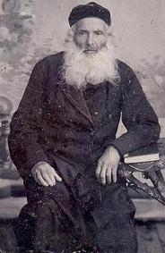
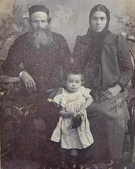
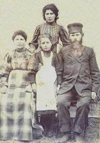
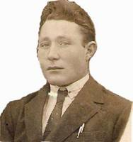
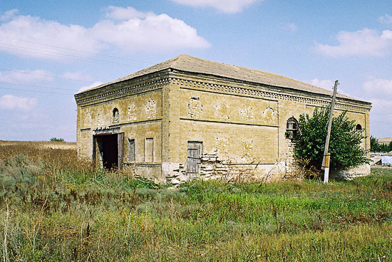
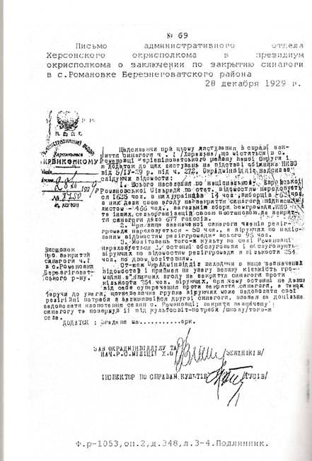

|
Борис Штейман
borisshteyman@rambler.ru
История еврейской
земледельческой колонии Романовка 1841-1941
В 1841 г. Генерал-губернатор
Новороссийского края граф М.С. Воронцов основал в Херсонской губернии, за
казенный счёт, новую еврейскую земледельческую колонию, которую назвали
Романовская (Романовка). Своё название колония получила по названию
пустоши, в которой она расположилась. Первыми поселенцами колонии были
выходцы из штетлов (местечек) западных губерний. Как свидетельствует архивный документ «О соединении малочисленных семейств,
переселяющихся евреев в Херсонские колонии в звании земледельцев за
1841г. » , и имеющиеся в нем
списки : « Список первой партии Полоцких евреев, предположенных к
поселению на Романовской пустоши от июня 26 дня 1841 года », и «Список второй партии Полоцких
евреев, предположенных к поселению на Романовской пустоши от июня 26 дня 1841 года.» , Большинство
первых поселенцев Романовки
прибыло из г. Полоцка, ныне Витебская область Белоруссии.
Фотокопия
оригинала
При переселении каждая семья
получала в надел 30 десятин "казенной земли" и дополнительно по
2 десятины на каждого новорожденного мальчика в наследное пользование без
права продажи. Согласно законодательству, каждая еврейская семья должна
была иметь не менее 6 человек. Только в этом случае она получала право на
надел. . Как правило, если семья была малочисленной, то в ее состав
официально вносили ближайших родственников или даже посторонних лиц.
Внесенные в состав семьи лица
мужского пола назывались «Приемыш», а женского пола – «Припищица» . Формирование таких семей хорошо видно в
Ревизской Сказке по колонии
Романовка от 30 апреля 1858г.
Фотокопия
оригинала
Колонисты на десять лет освобождались
от налогов, на 25 - от военной повинности, получали льготные кредиты для
приобретения скота и инвентаря.
Основным
занятием колонистов было хлебопашество, в основном выращивание озимой и
яровой пшеницы. Занимались и животноводством. Во дворах держали лошадей,
коров, птицу. Как видно из приведенного ниже "Приговора" от 15
апреля 1843 г., основная масса переселенцев, прибывших в Романовку, были
бедны, а суровые климатические условия, с которыми они столкнулись в
первые годы своего прибывания в Херсонской губернии, поставили
практически все хозяйства в экономический тупик, из которого без
поддержки государства они выйти не могли. Колония в тот период
насчитывала 114 хозяйств.
Все
важные вопросы решались на сельском сходе, где каждый хозяин двора имел
один голос. В состав администрации по образцу немецких колоний входили
шульц (староста) и 3 байзицера (заседатели), избираемые на три года. В
обязанности шульца входило сбор схода колонии, выполнение его решений и
распоряжений вышестоящей администрации, надзор за порядком в колонии.
Знавших
русский язык, особенно русскую грамоту, в колонии было мало, поэтому под
документом, составленным на русском языке, колонисты ставили свою подпись
на идиш.
Об обшественной жизни в колонии
можно судить по ряду сохранившихся документов, фотокопии которых
прилагаются на странице «Фотоальбомы».
Самый ранний таковой документ,
дошедший до нас, датирован
15-м апреля 1843года, то есть на
второй год после основания
Романовки, и повествует о сходе всех глав хозяйств (хозяевов дворов) для
подачи прошения о выделении денежного пособия в связи с неурожаем. Конечно для нас (потомков колонистов)
ознакомление с таким документом начинается с беглого просмотра
подписантов, в поисках фамилий своих предков и вот тот незабываемый
трепет возникающий при рассмотрении подписи поставленной ими более 160
лет назад.
Из этого же документа мы узнали
фамилии первого сельского старосты Романовки- Носона Куклинского и его
заместителей- Ерухимовича, Левита и Воробейчика. Мы можем только догадываться, какими
качествами должны были обладать эти люди, которым общество доверило
руководство, а стало быть во многом и свою судьбу на новом месте, в
совершенно непривычных и чуждых для них условиях обитания и выживания
Приговор
1843 года апреля 15-го дня общество
земледельцев колонии Романовской, сойдясь на мировой сход в полном
собрании своём, рассуждая о том, что по случаю неурожая в лето прошлого
1842 года хлеба и трав, в чем удостоверился при личном обзоре полей
Советник Херсонского Губернского Правления, Господин Коллежский Советник
Штейко. Поверенные наши испрашивали у благодетельного Правительства
пособия; в продовольствии семейств до нового урожая, семенах для озимого и
ярового посевов, и на прокормление чрез зиму скота, в наделение
поступившего по 10 руб. серебром на каждого хозяина. С ближением зимы, в
последних числах октября месяца начались сильные морозы, потом выпал
большой снег. Эти события давали повод выжиданиям ранней и жестокой зимы.
Поэтому мы, земледельцы, опасаясь чтобы не лишиться рогатого скота в
наделение нам поступившего, имея в виду то, что пособие в продовольствии
и обсеменении полей уже нам оказано, с разрешения Господина
Управляющего,отдали скот на зимовлю различным посторонним лицам. Иные же
весьма немногие хозяйства, зимовали скот собственным коштом, приобретая
корм покупкою, сбывая для того последнее имущество, предполагая эту
утрату сколько - нибудь заменить пособием у Правительства испрашиваемым по
наступлению весны, хотя обращались к хозяевам о принятии скота по
принадлежности дабы произвести своевременно посевы ярового хлеба, но без
уплаты денег никто выдать не согласился, почему мы вынуждены были с
распоряжения Господина Управляющего колониями получить только тягловый
скот, то есть волы, а гулевой и коровы остались залогом до совершенной
уплаты за зимовлю денег, которые мы по бедности своей уплатить не можем
без пособия Правительства, а потому предположили ходатайствовать у
начальства Милостивого распоряжения, об оказании нам денежного пособия на
уплату за зимовлю скота в той пропорции, какая для сего испрашивалась в
прошлом году. Для чего подачу куда следует прошений доверяем избранным
нами хорошего поведения хозяевам Липману Мельцерову и Мовше Куклинскому;
но предварительно исполнения, Приговор сей Сельский Приказ должен
представить на утверждение Господину Управляющему в чем и подписываемся.
С Т А Р Ш И Н Ы:
|
Лейба Лавут
Симха Баркан
Израиль Беркович-Свердлов
Лейба Йоселевич Марьяш
|
Давид Рубинов
Ицка Стерин
Лейзер Брейгин
|
Хаим Пальчик
Гилель Кобрин
Хаим Добровицкий
|
З Е
М Л Е Д Е Л Ь Ц Ы:
|
Меер Каданер
Хецкель Цыпкин
Беньямин Пташкин
Рувин Гесин
Лейзер Крайчик
Янкель Моцкин
Янкель Сирочинский
Гдаль Гарницкий
Лейзер Алуф
Абрам Лавут
Меер Мовша Тейтельбаум
Шолом Фридман
Aбрам Свердлов
Мовша Гольдин
Мовша Свердлов
Нахман Смоткин
Зелик Свердлов
Гирша Пайкин
Гершон Свердлов
Мордухай Пальчик
Генех Хилькевич
Ицка Хилькевич
Файвиш Марьяш
Шлёма Йоселевич Марьяш
Янкель Вильнер
Меер Бобрик
Аншиль Цыпкин
Гершка Цыпкин
Хаим Тарлавский
Лейба Аринзон
Янкель Меринзон
Нохим Грин
Мендель Бескинд
|
Абрам Тарлавский
Нохим Сирочинский
Мовша Вербов
Шлёма Винников
Лейба Лифланд
Лейба Урбанов
Мовша Замалин
Лейба Замалин
Вульф Мордфин
Йона Кантор (Кантер)
Шмарья Михлин
Янкель Добровицкий
Мовша Пургалин
Шмая Яхнин
Лейба Синайкин
Эля Лобок
Лейба Горелик
Нохим Стерин
Берка Каданер
Эфроим Хотемлянский
Янкель Хотемлянский
Мовша Горелик
Лейба Горелик
Йосель Рохлин
Меер Рохлин
Шлёма Маркович
Ноах Хотемлянский
Ерухим Горелик
Ерухим Ерухимович
Йосель Хотемлянский
Михель Карпиловский
Пинхус Хотемлянский
Бенцион Финкельштейн
|
Давид-Йона Славин
Фишель Кагурин
Гилель Лееман (Лесман)
Эля Плоткин
Лейба Шкловер
Берка Корних
Хонон Яхнин
Мордухай Хотемлянский
Ицхак Мурованкин
Вдова Песя Шурова
Йосель Ентель
Зусман Мецнер
Шлёма Меерович Марьяш
Калман Текс
Евна Каган
Исор Ритов
Янкель Каган
Нахман Фарберович
Залман Хаит
Абель Гамбурчик (?)
Хаим Казван
Эля Пильмейстер
Эля Сигал
Израиль Росин
Борух Фейгин
Мордух Соловей
Израиль Ицкович Свердлов
Лейба Томчинский
Гилель Бедеров
Абрам Брейгин
Залман Лобок
Арон Осиновский
Йосель Соловейчик
|
Что
действительно Приговор Сей с общего согласия земледельцев Колонии
Романовской составлен и их руками подписан, в том Сельский Приказ Колонии
Романовской подписом и приложением печати cвидетельствует апреля 15-го дня 1843 года.
Смотритель Мурашев
Шульц Носон Куклинский
Бейзицеры: Ерухимович, Давид Левит, Шмуль Воробейчик
Сельский
писарь Мельцеров
Фотокопия оригинала - http://picasaweb.google.de/koloniaromanovka/Prigovor1843
Десятым
в списке земледельцев колонии Романовка стоит Абрам Лавут. В 1850-е годы
он являлся раввином колонии Романовка. Согласно биографии Седьмого
Любавичского Ребе Менахема Менделя Шнеерсона, вышедшей в Израиле, Абрам
Лавут был прадедом его матери. С 1860-1865гг. Абрам Давидович Лавут
служил раввином Николаева. Его правнучка Шнеерсон (Яновская) Хана
Мееровна родилась в колонии Романовка в 1880 году. Её родителями были
Яновский Меер Шломо и Яновская Рахиль Ицковна. Бывший колонист колонии
Романовка Меер Шломо Яновский с 1908г. в течение трёх лет выполнял
должность учёного еврея в молитвенном доме Николаева.
Второй по хронологии
сохранившийся документ относится к 7-му году с момента основания колонии
и повествует о мирском сходе, вызванном необходимостью оказания помощи
шульцу колонии Изроилю Ерухимовичу
в связи с падежом его лошади.
Приговор
1848
года Мая 14 дня
Мы, нижеподписавшиеся общество колонии
Романовской сойдясь на Мировой сход и рассуждая о том, что по случаю
проезда шульца сей колонии Изроиля Ерухимовича по
общественной надобности в город Херсон пала его собственная лошадь,
которая стоила ему 60 рублей ассигнациями. А потому приговорили, дабы
Ерухимович не остался обношенным, оплатить ему таковые деньги с
общественных доходов, каковой Приговор за подписом нашим честь имеем
представить в Попечительство по делам еврейских поселений Херсонской
губернии на благорассмотрение и утверждение в сем и подписыбаемся:
|
Мовша Свердлов
|
Айзик Кругляк
|
Шмуль Сирочинский
|
|
Бенцион Финкельштейн
|
Абрам Бреин
|
Абрам Гурович
|
|
Лейба Аронзон
|
Есиль Вельштейн
|
Файвус Марьяш
|
|
Есиль Ентель
|
Лейба Марьяш
|
Мендель Бескинд
|
|
Шлёма Меерович Марьяш
|
Генох Осилькевич
|
Симха Баркан
|
|
Лейба Шкловер
|
Шлема Еселевич Марьяш
|
Ицка Хилькевич
|
|
Кусиель Левин
|
Мовша Гиндин
|
Янкель Моцкин
|
|
Копель Тарлавский
|
Есиль Осиновский
|
Зельман Лобок
|
|
Довид Славин
|
Михель Лопачин
|
Мовша Куклинский
|
|
Шлёма Маркович
|
Лейб Горелик
|
Лейба Геселев Горелик
|
|
Фроим Хотимлянский
|
Есиль Хотимлянский
|
Нохим Штерин
|
|
Ицка Штерин
|
Шмерка Махлин
|
Лейба Горелик
|
|
Ицка Каданер
|
Мордух Пургалин
|
Есиль Рохлин
|
|
Ерухим Ерухимович
|
Элья Лобок
|
Михель Карпиловский
|
|
Мовша Горелик
|
Мордух Пальчик
|
Хаим Пальчик
|
|
Г…….. Замалин
|
Пинхус Хотимлянский
|
Вульф Мордфин
|
|
Лейба Санайкин
|
Лейба Замалин
|
Лейба Лавут
|
|
Меер Рохлин
|
Носим Свердлов
|
Лейба Грин
|
Что действительно сей Приговор в Романовском сельском Приказе
составлен и собственноручно каждым подписан. В этом сей приказ подписать с
приложением казенной печати удостоверить мая 14-го дня 1848года.
|
Шульц колонии
|
Ерухимович
|
|
|
|
|
Байзицеры
|
подпись
|
|
|
|
|
Старшины
|
Есиль Ентель
|
Гирш Пайкин
|
Воробейчик
|
|
|
|
Шлема Марьяш
|
Шмерка Махлин
|
Хаим Пальчик
|
|
|
Писарь
|
Ольховский
|
|
|
|
.
|
М.Г.И ПОПЕЧИТЕЛЬСТВО
ПО ДЕЛАМ
ЕВРЕЙСКИХ ПОСЕЛЕНИЙ
ХЕРСОНСКОЙ ГУБЕРНИИ
№ 2539
14 июля 1848года
Колония
Большой Нагартав
|
В Попечительный Комитет
об иностранных поселенцах
Южного Края России
|
Сельский Приказ колонии Романовской при
рапорте от 19 минувшего мая за № 112 предоставил приговор общества,
которым желает возместить понесенный убыток Шульцем оной колонии Израилем
Ерухимовичем в результате падежа лошади при следовании его по
общественной надобности в г.
Херсон -60 рублей ассигнациями.
Не
принимая на себя право утверждения сего приговора, но зная весьма
ограниченное состояние Ерухимовича, представляя на благоусмотрение
Попечительного Комитета об Иностранных Поселенцах, имею честь покорнейше
просить дабы, сей примерный и усердный по службе Шульц, но бедный человек
не потерял собственность, счел возможным утвердить Приговор общества.
Подпись
Фотокопия
оригинала
http://picasaweb.google.de/koloniaromanovka/14051848?feat=embedwebsite#5509648149970994722
Третий по хронологии сохранившийся
документ относится к 11-му году с момента основания колонии и повествует
о мирском сходе по случаю выборов 2-х байзицеров (помощников сельского
старосты) Довида Левита и Хаима Пальчика
|
М.Г.И.
ПОПЕЧИТЕЛЬСТВО
ПО ДЕЛАМ
ЕВРЕЙСКИХ ПОСЕЛЕНИЙ
ХЕРСОНСКОЙ ГУБЕРНИИ
№ 420
13 февраля 1852 года
колония
Большой Нагартав
С избирательным листом о выборах
в колонии Романовской
2-х Бейзицеров Пальчика и Левита
|
В
Канцелярию Попечительного
Комитета
об Иностранных Поселенцах
Южного
края России.
Неприложенный избирательный лист
о выборах в колонии
Романовской 2-х
Бейзицеров при
донесении моем в
Попечительный Комитет
об Иностранных
Поселенцах от 28
минувшаго января за № 287
присеем в
Попечительный Комитет
имею честь
представить.
(подпись)
|
1851 года 0ктября дня мы нижеподписавшиеся общества
колонии Романовской в полном собрании на Мирской сходке учинили выбор из
среды себя в должности Бейзицеров означенных ниже сего в графах лиц
с тим что люди сий избраны
нами на основании тома х11 Постановления о колониях иностранцев в
Империи от 32 и 33. два должностных лица по большинству голосов из
совершеннолетних рассудительных ,
справедливых. добрых в поведении
прилежных и примерных в хозяйстве, а также искусных в земледелии.
каков выбор просим приказ
представить начальству на утверждение.
На
должность старшего Бейзицера представлены 3 кандидатуры:
1.Довид
Левит
2. Исер
Ритов
3.Файвус
Марьяш
Голоса распределились следующим образом:
За Довида Левита проголосовали:
|
1.Айзик Кругляк
|
2.Зроиль Свердлов
|
3. Зельман Лобок
|
|
4.Есель Осиновский
|
5.Зорох Свердлов
|
6.Гершка Цыпкин
|
|
7. Аншель Цыпкин
|
8.Борох Пайкин
|
9.Нахман Смоткин
|
|
10.Юда Глазов
|
11. Мордух Соловей
|
12.Симон Крупкин
|
|
13. Лейба Томчинский
|
14.Есель Соловей
|
15.Есель Беленький
|
|
16.Ерухим Пайкин
|
17.Янкель Крайц
|
18.Пейсох Аподис
|
|
19. Мордух Моцкин
|
20. Абель Сагал
|
21.Файвус
Марьяш
|
|
22. Абель Ланг
|
23. Исер Ритов
|
24.Элья Пильмейстер
|
|
25.Есель Вельштейн
|
26. Есель Томчинский
|
27.Лейб Горелик
|
|
28. Нохом Штерин
|
29.Лейб Лавут
|
30. Довид Славин
|
|
31. Меер Каданер
|
32.Лейб Замалин
|
33. Рувин Мордфин
|
|
34.Элья Лобок
|
35.Ноех Хотимлянский
|
36.Пинхус
Хотимлянский
|
|
37.Лейб Синайкин
|
38. Есель Хотимлянский
|
39. Янкель Хотимлянский
|
|
40. Есель Рохлин
|
41 Евсей Рохлин
|
42. Ицка Каданер
|
|
43. Ицка Штерин
|
44. Лейб Горелик
|
45 Шлема Русин
|
|
46. Ерухим Ерухимович
|
47.Зроиль Свердлов
|
48. Зельман Финкельштейн
|
|
49. Бенцион Бас
|
50. Зроиль Росин
|
51. Шимон Карпиловский
|
|
52.Шимон Виников
|
53. Мовша Горелик
|
|
За Исера Ритова проголосовали:
|
1.Шмуль Сирочинский
|
2.Гирш Салант
|
3.Эля Рубинов
|
|
4.Гаврил Левит
|
5. Рувин Гесин
|
6. Симха Баркан
|
|
7.Мовша Куклинский
|
8. Ерухим Пальчик
|
9. Михель Лопачин
|
|
10.Михель Кобрин
|
11.Мовша Пургалин
|
12.Янкель Добровецкий
|
|
13.Хацкель Цыпкин
|
|
|
За Файвуса Марьяша проголосовали:
|
1. Абрам Гурович
|
2.Сохор Марьяш
|
3. Довид Левит
|
|
4. Шлема Марьяш
|
5.Ицка Казвин
|
6.Зельман Хилькевич
|
|
7.Борох Бобрик
|
8. Мордух Корних
|
9. Есель Ентель
|
|
10.Евна Каган
|
11. Михель Бескинд
|
12.Шлема Марьяш
|
|
13.Носон Вайстуб
|
14.Шмерко Махлин
|
15. Шлема Маркович
|
|
16.Евсей Замалин
|
17
? ?
|
18..Абель Тарлавский
|
|
19. Хаим Тарлавский
|
20. Бенцион Текс
|
|
На должность
младшего Бейзицера представлены также 3 кандидатуры:
1. Хаим
Пальчик
2. Янкель Добровецкий
3. Довид
Славин
Большинством
голосов был избран Хаим Пальчик
Документ подписали:
Сельский
начальник
подпись
Шульц Ерухимович подпись
Байзицеры
подпись
подпись
После выборов, раввин колонии Романовка Абрам Лавут, привел к присяге
Довида
Левита и Хаима Пальчика.
Фотокопия оригинала: http://picasaweb.google.com/koloniaromanovka/213021852?feat=embedwebsite#
Согласно
списка должностных лиц в
еврейских колониях Херсонской губернии от 30 июня 1849г. таковыми по
колонии Романовская являлись:
Шульц - Израиль Ерухимович с 1 января 1844 года.
Байзицеры:
Гирша Кобрин с 20 февраля 1842
года,
Янкель Добровецкий с 12 марта 1844
года.
Фотокопия
оригинала
|

|
|
Жители колонии Романовка.
|
В 1855 г. рядом с
Романовкой была основана новая колония - Малая Романовка, соответственно старую
колонию стали называть Большая Романовка. В этих двух колониях в 1859г.
проживало 1088 жителей (540 мужчин и 548 женщин ). В 1885 г.количество
жителей выросло до 1335 (678 мужчин и 657 женщин). В это время на две
еврейские колонии приходилось: одна синагога, одна школа на 57 учеников,
7 торговых и 3 промышленных учреждений. Позднее две колонии объединились
в одну с общим названием Романовка. В 1908 г. в Романовк построили
двухлетнюю начальную школу, которая состояла из двух просторных комнат,
разделенных широким вестибюлем и трехкомнатной квартиры для учителя.
Благодаря этому, практически все дети колонистов получали начальное
образование не только в хедерах, но и светское на русском и еврейском
языках в государственной школе. В этом же году в Романовке построили
библиотеку и маслобойню.
Жизнь колонистов несла на себе отпечаток еврейского
местечка. Попечитель еврейских колоний Демидов отмечал, например:
"Женский пол земледельцев самими мужьями устраняется от занятий
земледелием... Кроме сего евреи один пеpед другим стараются, чтобы жены
их были как можно лучше одеты, и сии избалованные женщины повседневное
платье имеют гораздо лучше, нежели порядочные хозяйки русского хлебопашца
праздничное, да и сами евреи-земледельцы одеваются против русских лучше...
К тому же, всякий почти из евреев не щадит издержек на наем учителя для
обучения сыновей своих еврейской грамоте и догмам веры".
Основным продуктом питания колонистов являлся пшеничный
хлеб и мучные изделия - лапша и галушки, замешанные на яйцах. Главным
мясным продуктом была курятина - отварная и жареная. Обычно ели куриный
бульон, борщ, овощи и фрукты. Любимые блюда колонистов - фаршированная
рыба и фиш-картофелес (рыбно-картофельный суп с мелко нарезанным луком и
перцем), а также цимес (сладкая фаршированная морковь). Обычными в
рационе были молочные продукты: парное и топленое молоко, творог и
брынза, сливки и сливочное масло.
Список жертвователей
колонии Романовка из книги "Sefer Imrei Shmuel, helek shlishi"
( p. 9 ), printed by Avraham Y. Alter, Warshaw, 1912
|
1.Рав Израиль-Лейб Иткин
2.Нахман Лоцин
3.Израиль-Яков Тарнавский (?)
4.Эли Лифлянд
5.Хаим-Зусман Кацов
6.Элимелех Левит
7.Беньямин Томчинский
8.Мамут Свердлов
9.Моше-Меир Бобрик
10.Моше Бен Арон Вильнер
11.Хаим Шлонт
|
12.Ицхак-Лейб Штерн
13.Израель-Исер Цыпкин
14.Зеев-Вольф Горелик
15.Яков Соловей
16.Израиль Бляхеров
17.Аба-Лейзер Кричак
18.Шмуель Кантор
19.Алтер Йоффе (?)
20.Израиль-Исер Цыпкин
21.Зеев-Вольф Горелик
22.Яков Соловей
|
23.Израиль Бляхеров
24.Ицхак-Айзик Хилькевич
25.Авраам-Игуда Рубинов
26.Аба Тарнавский
27.Гензель Рубинов
28.Зельман Тарнавский
29.Нахум Гонеров (?)
30.Яков Лицкин
31.Шуб Шнеур-Залман Левин
32.Габай Нисон Пайкин
|
http://www.evkol.nm.ru/list_kherson.htm
После
гражданской войны в Романовке насчитывалось около 500 дворов. Наиболее
распространенной фамилией была Пташкины. Ее носили более десятка семей
колонистов.
В 1929-30 гг. в Романовке было организовано два колхоза:
«ІІІ Интернационал» и им. А. Д. Цюрупы. Колонистов заставляли вступать в
колхозы, сдавать землю, лошадей, коров, инвентарь. Самых богатых
выселили. Тех, кто не хотел вступать в колхозы, обкладывали очень
высокими налогами, которые приводили к обнищанию. Хлеб вывозили на
элеваторы. Во время голодомора 1932-1933 гг. населению выдавали по 20 кг.
ржаной муки в месяц. Некоторые колонисты съедали эту пайку за 2-3 дня и
не дождавшись новой выдачи умирали от голода. В 1933г. председателем
Романовского сельсовета стал М.И. Зевлевер, бывший коммунаровец из
Нагартава.
|

|
|
Зевлевер
Михаил Израйлевич –
с 1933 по
1936 председатель
сельсовета
в Романовке.
|
|
Список кулаков-експертников I и II
категории по Херсонскому округу на 1930 г. Колония Романовка.
|
|
1. Бляхеров Касриэль Мовшович.
2. Горелик Арон Касрилевич.
3. Левит Шолом Шмулевич.
4. Сулькин Иосиф Соломонович.
5. Левит Давид Шмулевич.
6. Пайкин Нисов Шопшович.
|
|
ХОДА Ф. Р. - 440 - О.
5 - Д. 45
|
|
Термином “кулак-экспертник” называли
зажиточного хозяина, которому доводился «на двор"
налог, согласно его имущественного положения.
|
С началом Великой
Отечественной войны была организована эвакуация населения в восточные
районы страны. В Романовке события разворачивались таким образом. В августе
1941г. пришел приказ: « Весь колхозный скот гнать на восток». Было решено
провести эвакуацию всего села. Выехать можно было лишь на подводах,
запряженных волами. Но доехать удалось лишь до реки Южный Буг, где
выяснилось, что мост разрушен, а все дороги перекрыты отступающими
войсками. Через день появились немцы и люди вынуждены были вернуться в
Романовку.
Немецкая власть начала действовать методично. Вначале
приехал представитель из района и составил список всех еврейских семей
поименно. Через 10 дней, 13 сентября, прибыли фашисты. Они вызвали
председателей колхозов и сельсовета и объявили: «всем без исключения
евреям собраться 14 сентября на окраине села возле школы. С собой взять
только ценные вещи. Там будет объявлена их дальнейшая судьба». Трое
мальчишек школьного возраста ночью незаметно перебрались через речку
Висунь и спрятались в леске. Днем немцы обнаружили их отсутствие и в след
за беглецами были спущены овчарки и мальчишек схватили.
14 сентября прибыли машины с немецкими солдатами и
полицаями. Село было взято в кольцо. Людей выгоняли из домов и оттесняли
к зданию школы. Дома тщательно обыскивались, собравшихся проверяли по
спискам. Позже людям выдали лопаты и заставили копать огромную яму. А
затем начался массовый расстрел евреев. В яму падали мёртвые, живые и
раненые. Раненых добивали уже в яме. Лишь ночью одному из уцелевших
удалось вылезть из ямы и убежать. Романовка, как еврейское поселение
исчезла полностью в один день.
Вот так трагически 14 сентября 1941г. вместе с гибелью
998 евреев закончилась столетняя история еврейской земледельческой
колонии Романовка.
Жители Романовки - Мотя Пташкин, Баскины, Ритовы,
Пайкины, Бревда, Соловей, которые вернулись в село после окончания
Великой Отечественной войны, не смогли жить там из-за морального гнета.
Некоторые из них уехали в Биробиджан. На месте гибели односельчан был
установлен памятный знак. В 1978г. Яков Пташкин вместе с братом Михаилом
по поручению земляков построили на этом месте памятник-монумент,
огороженный металлической оградой.
Накануне 14 сентября 2005 года председатель
Березнеговатской райнной администрации Валерий Фалилеев и председатель
колхоза «Прометей» Николай Скорый установили возле захоронения гранитную
стелу «Жертвам Холокоста». Районная администрация пригласила гостей на
торжественное открытие. Из Николаева, Одессы и Херсона приехали бывшие
жители Романовки, которые все еще помнят родные места и связанную с ними
трагедию. Главный раввин Николаева и области Шолом Готтлиб открыл
памятную плиту и прочитал специальную молитву "Эль моле
рахамим" в память о евреях, погибших от рук фашистов (Фотоальбом
«Романовка-2005» ).
В июле 2007г. Романовку посетил потомок колонистов,
Артур Клемперт. Вот коротко то, что он увидел в Романовке и запечатлел на
фотопленку (Фотоальбом
« Романовка- 2007»).
. Впечатления очень сложные. Деревня находится в
состоянии вымирания. Осталось несколько жителей, которые собираются рано
или поздно ее оставить. Большинство строений и домов находится в
полуразрушенном или окончательно руинном состоянии. Нам, как и положено,
продемонстрировали каменное здание синагоги, а также другое здание в
центре единственной улицы деревни. О довоенных жителях никто ничего не
знает, кладбище не сохранилось. В месте, где оно было, находится теперь
памятник жертвам нацистского геноцида, который представляет собой
небольшой монумент - надгробие надо рвом, где покоятся убитые. Он окружен
оградой. Неизвестно кто принес к этому памятнику единственную еврейскую
мацеву (надгробие) с плохо читаемой надписью. Вокруг буйство природы,
домашние животные. Жители говорят, что часто приезжают родственники и
потомки жителей Романовки. Последнее, что хотелось бы отметить - это
попытка разыскать документы по Романовке в Николаевском областном
государственном архиве. Выяснилось, что дореволюционные фонды утеряны во
время войны. Остается надежда разыскать фонды советского времени.

Здание
синагоги колонии Романовка. 2005 г.
Что писали о
колонии Романовка в разные годы:
Романовка, Большая и Малая — еврейская земледельческая
колония Херсонск. губ. и уезда. Колония состоит из двух частей, Большой и
Малой P., причем общественные здания, управление и училище — общие для
обеих колоний. Жители в преобладающем числе земледельцы, но ввиду того,
что вблизи колоний нет никакого городского поселения, колонисты в
свободное от полевых работ время занимаются мелкой торговлей. В 1898 г.
семейств земледельцев 158; душ 1073. В пользовании имеется 2640 дес.
земли. По переписи 1897 г. жит. 1302, из них 1283 евр.
Еврейская
энциклопедия Брокгауза и Ефрона 1908-1913 гг.
По левой стороне Крымско-Елизаветградского тракта. Романовка
(Большая и Малая) при речке Висунь. Синагога, молитвенный дом. Приказ.
100 верст от Херсона.
1859 г. — 115 дворов, 540 мужчин и 548 женщин.
1885 г. — 596 мужчин и 613 женщин, немцев нет.
Д.З.
Фельдман "Страницы истории евреев России. XVIII-XIX веков"
М.: Древлехранилище, 2005. 422 с.
Еще в 1842 г. поселенцы новооснованных колоний с
pазpешения начальства командиpовали своих уполномоченных на pодину - в
Куpляндию, Витебскую и Могилевскую губеpнии - для сбоpа пожеpтвований на
постpойку молитвенных домов у себя в колониях. В колонии Романовка была
создана даже "иешива", котоpая обслуживала не только
колонистов, но и гоpожан, пpиезжавших специально с этой целью в колонию.
Для "иешивы" собиpали особые пожеpтвования, достигшие в 50-е
годы кpупной суммы - до 3000 pуб. сеpебpом в год (несомненно, эти деньги
собиpались, в основном, вне колоний).
М.H.Зябко,
И.М.Шайкин "Hародное просвещение, быт и нравы
в еврейских земледельческих колониях Юга
Украины"
Мошенник и придуманная ешива.
Любавическим хасидам наверно будет
интересно узнать о редкой статье в религиозной газете, напечатанной 100
лет назад. Это письмо, посланное в 1913г Меир Шлемо Гальпериным, уроженцем
Романовки, в газету а-Модия, выходившую в Полтаве, в котором
предупреждает о мошеннике, ходящем по местечкам и собирающим
пожертвования на ешиву, которой нет.
Герои этого письма - члены одной
семьи очень известной среди любавических хасидов - семья Яновских -
предки и родственники раббанит Ханы, матери Ребе.
Один из членов семьи - Меир Шлемо
Гальперин (его имя такое же как и у его родственника - Меир Шлемо
Яновский - раввина Николаева и отца раббанит Ханы), писавший письмо
предупреждает о посланце-проходимце, собирающим пожертвования и
раздающего квитанции от имени ешивы, хотя она не существует с тех пор как
умер Исраель Лев Яновский -судья и глава ешивы, с тех пор прошли 30 лет и
ничего от нее не осталось.
Писавший те строки рассказывал, что
приложил немало усилий, чтобы люди знали о проходимце.
О ешиве в Романовке писал Ребе в
предисловии об авторе, его прадеде
Аврааме Давиде Лавуте, в книге Чистая опора - ешива в колонии Романовка
Херсонской губернии под руководством его зятя р. Исраеля Льва Яновского
была известна и текли туда ученики отовсюду.
Чтобы подтвердить свои слова он
послал письмо потомку раввина колонии р.
Исраелю Ари - тоже из семьи Яновских
, носившего имя вышеупомянутого деда. Он подтвердил, что в Романовке нет
ешивы и большая мицва поймать мошенника и отобрать у него квитанции,
удостоверение и печать.
В письме Гальперин предупреждает
читателей о посланце-проходимце , поймать его за руку, чтобы с Б-жей
помощью искоренить эту занозу , чтобы не бросало тень на настоящих
посланцев, которые ездят для возвышения Торы и ее славы.
И таким образом нам стало известно о
уважаемой семье Яновских и даны сведения для историков хасидизма.
Например стал известнен год смерти прадеда Ребе - Исраеля Льва Яновского
- возглавлявшего ешиву 30 лет до того -1882. Он умер даже раньше своего
свекра Авраама Давида Лавута, написавшего Шаар а-Колель. Как известно его
правнук - Исраель Арье Лев Шнеерсон, брат Ребе, также умер в молодости.
http://www.shturem.net/index.php?section=artdays&id=65
Уважение, причиняющее боль.
Однажды наш ребе и учитель РаШаБ
ехал в колонию Романовку Херсонской губерни в телеге вместе с р. Ашер ШуБ
из Николаева.
Потом р. Ашер рассказывал - к ребе
отнеслись с большим уважением, настолько, что распрягли лошадей и везли
телегу сами, но на лице ребе была видна большая печаль.
А реб Ашер заканчивал рассказ –
"дай Б-г, чтобы я так печалился в Судный день во время дневной
молитвы."
источник -
сплетни и расказы, стр 58
http://chabad.info/bm/index.php?magazine=bm_&status=goto_id&id=1673
Документы уездного отдела народного образования
освещают вопросы развития библиотечного и театрального дела, которые в
колониях были связаны между собой, поскольку самодеятельные театры были
одной из форм финансирования деятельности библиотек. Из них узнаем,
например, что в Большой и Малой Романовках работала общественная
российско-еврейская библиотека, которая была открыта еще в 1911 г. и
содержалась на членские взносы и частные пожертвования, а с декабря в
1918 г. - на деньги от театральных представлений, что устраивала местная
интеллигенция. Библиотекой заведовал Лейзер Абрам Бир. 283 из 1,5 тыс.
книг библиотеки были на еврейском языке. 75 % читателей были моложе
меньше 17 лет. С 1919 г. новые книги не покупались. Как уже отмечалось,
любительский театральный кружок был создан здесь в декабре в 1918 г. Его
составили 20 лиц, усилиями которых за полгода было поставлено три
представления, на которые приходило каждый раз около 300 зрителей.
Д. В.
БЄЛИЙ "Єврейськi землеробськi колонi
Херсонського повiту на зламi доби (1919-1922 рр.)
"
"...В Большой и Малой Романовках работали в 1919 г. две одноклассные
школы, которые находились в собственных помещениях. В них работали три
учителя. Проблема грамотности в колониях была практически решена - из
2050 колонистов грамотными были 1950... В Большой и Малой Романовках
работала общественная русско-еврейская библиотека, которая была открыта
еще в 1911 году и содержалась на членские взносы, частные пожертвования,
а с декабря 1918г.- на деньги от театральных спектаклей, которые
устраивала местная интеллигенция. Библиотекой заведовал Лейзе Абрам Бир.
Из полутора тысяч книг в библиотеке 283 были на еврейском языке. 75
процентов читателей были до 17 лет. С 1919 года новые книги не
покупались...Самостоятельный театральный кружок был создан в декабре 1918
года.Его создали 20 театралов.За полгода усилиями театралов были
поставлены "Дикий человек" и "Король Лир" в
постановке Якова Гордина, и "Страдания отцов". Спектакли
проходили в очень плохом сарае.В среднем на спектакли приходило 320
зрителей".
Из книги
Бориса Непомнящего "Херсон еврейский. Трагедии и судьбы"
глава
"Еврейские земледельческие колонии Херсонского уезда в переломный
период 1919-1922 гг"
Конец 20-х годов принес усиление тоталитарного режима и
связанное с ним постепенное свертывание деятельности еврейских
организаций и учреждений, начало репрессий. Под первую волну репрессий
попали еврейские священнослужители, которые противились закрытию культовых
сооружений. Однако синагоги закрывались, а их помещения использовались с
культурно образовательными целями. Подобный факт произошел в Романовке
Березнеговатского района в декабре 1929 г., когда помещение синагоги было
превращено в школу. При этом интересы верующих в количестве 254 человека
никто не учитывал.
Юрий
Котляр "Образование и культура сельского еврейского населения
Юга Украины в первой трети ХХ века "

Согласно справке исполкома Березнеговатского райсовета,
в период оккупации нацисты и их пособники замучили и расстреляли 1863
человека еврейской национальности, в т.ч. в колонии Нагартав - 865
человек, в колонии Романовка - 998.
Стер
Елисаветский "Судьба евреев-колонистов в южном регионе
Украины"
Покоління розстріляних
Наближається річниця жахливої трагедії, що сталася 14 вересня
1941 року в селах Великий Нагартав та Романівці нашого району. В той день
німецько-фашистські загарбники разом зі своїми лакузами розстріляли сотні
мирних громадян. Ось що писала про це газета "Південна правда"
у номері від 11 січня 1946 року.
"... Нагартав. Звичайне тихе українське село. 14 вересня 1941
року тут сталася потворна і жорстока подія, яку ніколи не забути.
Начальник Березнегуватської районної управи Бауер, напередодні видав
розпорядження: на сьому годину ранку зібрати 14 вересня все єврейське
населення, нібито для перепису. Люди, нічого не підозрюючи, зібралися до
синагоги. Коли в приміщення набралося багато людей, поліцаї оточили
синагогу і почали партіями по 80-100 чоловік відправляти за село до рову
на розстріл. Тут були старики, жінки, малі діти. Нещасним наказували
роздягтися і лягати на дно рову. Стогін, зойки, благання про допомогу
приречених не викликали в катів співчуття. Залп - і жодного не залишилось в живих.
З'являється чергова партія і знову - залп.
Стрілянина, жахливі крики було чути далеко за село. Щоб не займати
багато місця, фашисти
наказуавли роздягатися жертвам і лягати зверху на трупи, щоб потім
розстрілювати їх. Грудних дітей, бавлячись, бандити підкидали в повітря і
на льоту стріляли в них. Не милували звірі і хворих - для них було виділено 10 спеціальних підвід, що підвозили
немічні жертви до місця розстрілу.
- Німці жорстоко знущалися над нами, - розповідає Б.П. Кац, який, на
щастя, залишився живим, вибравшись з-під трупів, - у мене в цей день
загинула вся сім'я -дружина, п'ятеро дітей, сестри..."
- У травні 1944 року ми з мамою повернулися до Березпегуватого
і дізналися про страшну вересневу трагедію першого року війни, - згадує
Анна Юхимівна Сидоренко, колишня вчителька Березнсгуватської ЗОШ ст., яка нині проживає
в Ізраїлі.
Серед розстріляних були і мої ровесники. Ось вони, п'ятикласники
Березнегуватської середньої школи, з широко відкритими очима дивляться на
мене з групової фотографії Толя Гінчерман - син колгоспного коваля і
кухарки, сором'язливий ввічливий хлопчик, який добре
навчався, любив техніку і сільськогосподарську працю. Його також любили у
великому класному колективі, де навчалося 20 українців, 12 євреїв і одна
дівчинка білоруска.
Загинули від фашистських куль і дві
Марійки - Юрковська
та Альтгауз - простенькі дівчатка нагартавських колгоспників і ще Соня
Кікнис з тих, що незадовго до війни стали жителями Нагартави.
Тоді, у 1944 році, на місці загибелі наших родичів, близьких і
земляків ще було видно сліди страшної драми. Трупи полеглих були ледве прикриті
тонким шаром землі. Односельці потурбувалися і кам'яною стіною
відгородили скорботну могилу. Почалися пошуки земляків, ще залишилися
живими. До сільської ради і до Л. Й. Барендорфа, П.А. Кальман та Ш. А.
Рускол листи йшли з усього Радянського Союзу. Стали збирати кошти не
перезахоронения жертв фашизму. Щороку, до 14 вересня, до Березнегуватого
і Романівки приїздило багато родичів і близьких розстріляних. Через
кілька років за селом, на кладовищі, у братській могилі було поховано
останки розстріляних. Через сорок років за проектом наших колишніх
земляків -херсонського і полтавського архітекторів Большана і Авенбурга
та добровільною участю багатьох колишніх березнегуватців і їхніх молодших
родичів на могилі загиблих було споруджено пам'ятник, який символізує
обірване життя дітей і літніх людей. На пам'ятнику викарбувані слова
"Тут похована тисяча останків рідних і близьких села Нагартави.
По-звірячому замучених німецькими катами в трагічний день 14 вересня 1941
року. Пам'ятаємо, горюємо, скорбимо".
Зовсім недавно я познайомилася з сім'єю Геннадия Володимировича
Дубова, що мешкає у Запоріжжі. Корені їхнього роду у Нагартаві. У той
страховий день їх рід зменшився на 19 чоловік.
Минають роки та пам'ять людська жива. І кожен,
хто перетерпів тягар воєнного лихоліття, готовий ще раз перетерпіти
труднощі, лише б не чути пострілів, що обривають життя людей.
Валентина Сом
На
знімках: пам'ятники жертвам фашизму в Березнегуватому та Романівкі.
Скільки
їх, величавих і скромних стоїть по всій Україні та за її межами. А
скільки спить під ними вічним сном колишніх хліборобів, людей різних
професій. Вони, як вічні вартові, оберігають наш спокій, хвилюють,
тривожать.
"Поколения расстреленных" из
газеты "Народная трибуна", Березнеговатое, 11/9/2008
|